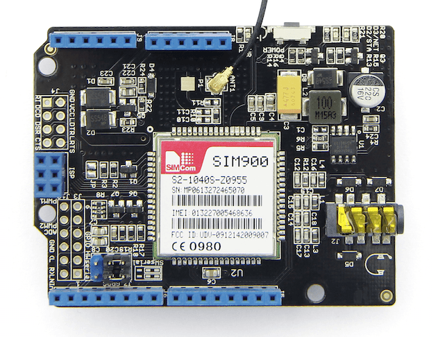
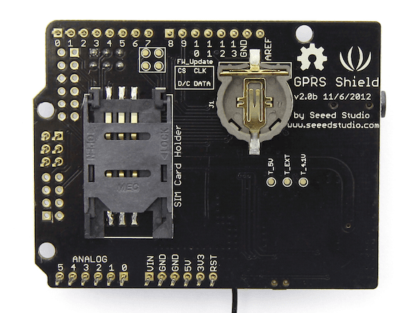
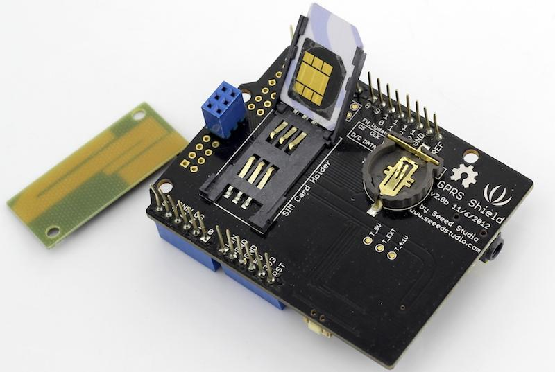
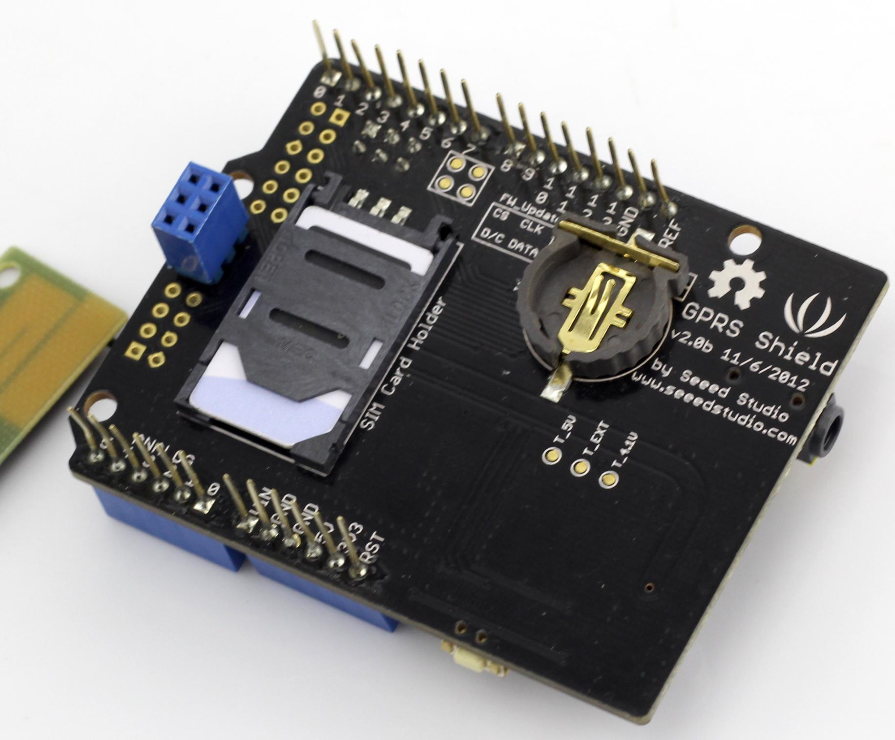
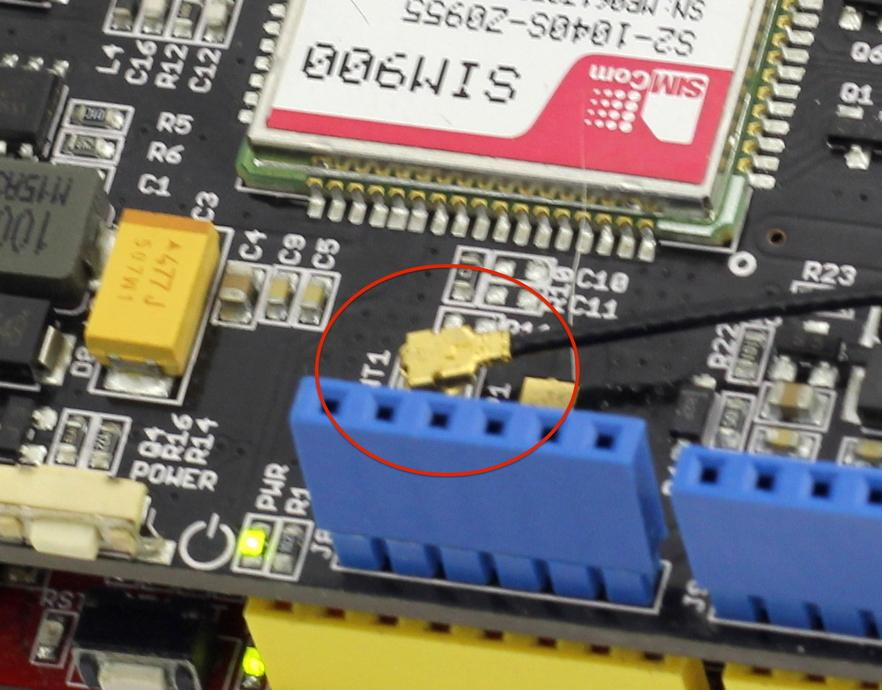
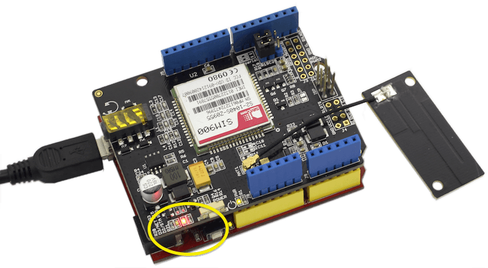
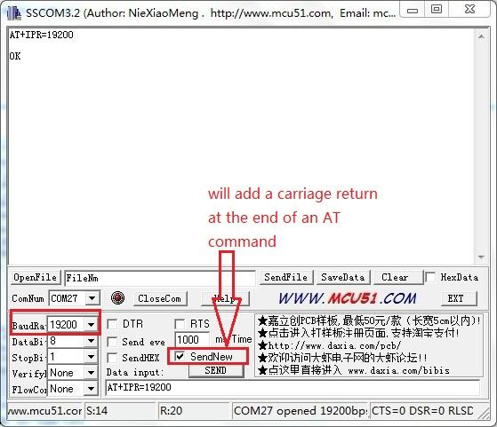
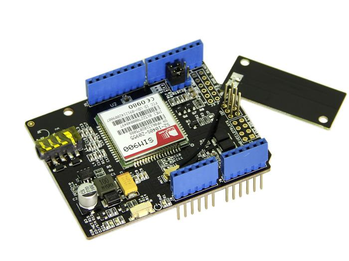
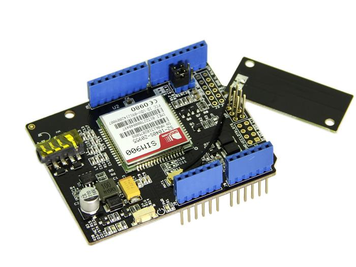
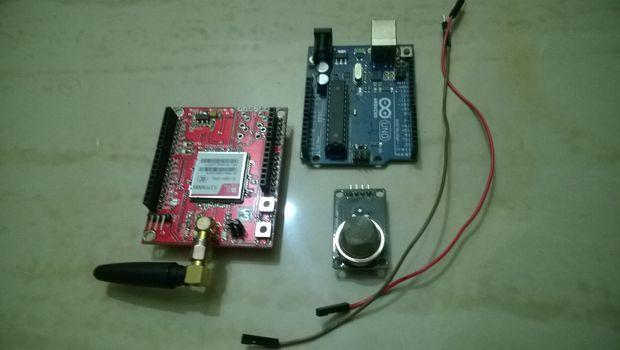

GPRS Shield V2.0
 
Overview
Hook your Arduino up to GSM/GPRS cell phone network with GPRS shield! You can use your Arduino/Seeeduino or other main boards to dial a phone number or send a text to your friend via easy to use AT commands now. This new version features a quad-band low power consumption GSM/GPRS module SIM900 as well as a compact PCB antenna. Meanwhile, improvements on interfaces and basic circuit have been taken to make it more concise and reliable. And there’re two choices for you to communicate GPRS shield with the main board -- UART or SoftwareSerial.
Model:SLD01098P
Specification
| Compatible |
Arduino UNO/Seeeduino directly ; Other main board via jumpers
|
| Selectable interface |
UART, Software serial
|
| Quad band support |
850/900/1800/1900MHz
|
| Communication support |
Standard - GSM 07.07 & 07.05 and Enhanced - SIMCOM AT Commands
|
| Operation temperature |
-40°C to +85 °C
|
| Protocol support |
0710 MUX protocol, embedded TCP/UDP protocol, FTP/HTTP, FOTA, MMS, embedded AT
|
| Certification of SIM900 |
CE, IC, FCC, ROHS, PTCRB, GCF, ICASA, REACH, AT&T
|
| Dimensions |
68.58 * 53.34mm
|
| Consumption |
|
| Power supply |
5v via 5V pin, 6.5~12v via Vin pin
|
Cautions
- Make sure your SIM card is activated.
- GPRS Shield doesn't come with ESD precautions. Take special care when handling it in dry weather.
- The factory default setting for the GPRS Shield UART is 19200 bps 8-N-1. (Can be changed using AT commands).
- There’re two choices for you to communicate GPRS shield with the main board while plugging the two jumpers on to the SWserial or HWserial positions. If using SWserial, D7 and D8 will be used by SIM900 of GPRS Shield; if using HWserial, D0 (RX) and D1 (TX) will be used.
- Unsolder pad JP default. Solder it if you wanna use software to power on/off the GPRS shield. Set the D9 to a high level, it means the button is pressing.
- The pad of JP besides the ISP port.
- Some pins of SIM900 are break out beside the ISP port, there're LINEIN_R, LINEIN_L, ADC, PWM1, PWM2, GPIO1~GPIO6, GND, FW_update (DISP_CLK, DISP_DATA, DISP_D/C, DISP_CS), RI, DCD, DSR, CTS, VDD_EXT, LDTR, LRTS. And those pins are pointed from SIM900 without any setting.
- It can provide 3v volts to VRTC of SIM900 from CR1220 battery.
- Replace the original LDO circuitry with DC-DC circuitry -- TD1410. Heat dissipation gets lower and efficiency gets higher up to 80%+. Meanwhile, the output can up to 4.15V/2A. And there're two input of power supply:
- 5v pin: Soft start circuitry is added in the new version to smooth out the power shock at the moment the shield turns on, preventing the shield from unexpected reset issue. More detailed changes please refer to Related Reading : Version Tracker
- Vin pin: The range of input voltage are between 6.5v to 12v.
- The type of Antenna connector is IPEX, and the maximum transit power of SIM900 is 30dBm(1w). More information please see the Specification of GPRS Antenna.
| LED
|
Status
|
Function
|
| Power-on indicator(Green)
|
Off
|
Power of GPRS Shield is off
|
|
|
On
|
Power of GPRS Shield is on
|
| Status Indicator(Red)
|
Off
|
Power off
|
|
|
On
|
Power on
|
| Net indicator(Green)
|
Off
|
SIM900 is not working
|
|
|
64ms On/800ms Off
|
SIM900 does not find the network
|
|
|
64ms On/3000ms Off
|
SIM900 finds the network
|
|
|
64ms On/300ms Off
|
GPRS communication
|
Examples/Applications
Getting Familiar With AT Commands
As you receive the GPRS Shield, what would be the first thing you want to do with it? Send out a text (SMS)? Or call up someone (headset required)? You can do all of this by talking to the GPRS Shield using AT Commands - a special language that it understands.
AT Commands are simple textual commands sent to the GPRS modem over its serial interface (UART), so you can use any serial terminal software to communicate with it.
- Follow the steps below to set up the hardware system.
- 1. Insert an activated SIM card to SIM Card Holder
- A 6 Pin Holder for SIM Cards. Both 1.8 volts and 3.0 volts SIM Cards are supported by SIM900, the SIM card voltage type is automatically detected.

- 2. Check the antenna
- Make sure the antenna have installed properly in the antenna interface.

- 3. Communication port configuration
- The GPRS shield can be controlled via hardware serial port or software serial port of Arduino. Here we use the software serial port as default. Choose it by inserting jumper caps as below.
- 4. Plug to Arduino
- Stack the GPRS Shield onto Arduino.
- 5. Power up Arduino
- Power up Arduino by USB cable or DC Jack. The Power-on indicator LED should light up once connectted.

Let's have a try to control the GPRS shield with AT commands.
The GPRS Shield comes with all accessories that you need to get started with sending data over the GSM network except an Arduino board and a GSM SIM Card. If you want to make voice calls, you would also require a headset with microphone.
- Step 1: Test Setup
- 1.Create a new Arduino sketch and paste the codes below to it.
//Serial Relay - Arduino will patch a
//serial link between the computer and the GPRS Shield
//at 19200 bps 8-N-1
//Computer is connected to Hardware UART
//GPRS Shield is connected to the Software UART
#include <SoftwareSerial.h>
SoftwareSerial GPRS(7, 8);
unsigned char buffer[64]; // buffer array for data recieve over serial port
int count=0; // counter for buffer array
void setup()
{
GPRS.begin(19200); // the GPRS baud rate
Serial.begin(19200); // the Serial port of Arduino baud rate.
}
void loop()
{
if (GPRS.available()) // if date is comming from softwareserial port ==> data is comming from gprs shield
{
while(GPRS.available()) // reading data into char array
{
buffer[count++]=GPRS.read(); // writing data into array
if(count == 64)break;
}
Serial.write(buffer,count); // if no data transmission ends, write buffer to hardware serial port
clearBufferArray(); // call clearBufferArray function to clear the storaged data from the array
count = 0; // set counter of while loop to zero
}
if (Serial.available()) // if data is available on hardwareserial port ==> data is comming from PC or notebook
GPRS.write(Serial.read()); // write it to the GPRS shield
}
void clearBufferArray() // function to clear buffer array
{
for (int i=0; i<count;i++)
{ buffer[i]=NULL;} // clear all index of array with command NULL
}
- 2. Upload the code to Arduino. If you do not know how to upload the code, please click here.
- 3. Download and fire up serial tool if you don't have one. Choose the correct COM port for Arduino, and set it to operate at 19200 8-N-1 and then click "Open Com". You can also use AT Command Tester to send AT commands. Please click here if you are interesting in it.
- 4. Power up the SIM900 by pressing the power button in about 2 seconds. The red LED will be on. The green one beside it will blink. If the shield join the network sucessfully, the green LED will blink every 3 seconds.
- 5. You should find the message on the serial monitor as below which is sent by the SIM900 to inform you it has joined the network:
RDY
+CFUN: 1
+CPIN: READY
Call Ready
- If you can not see the messages in the serial monitor, you should click the "send new" option that will add carriage return at the end of AT command and then send AT command "AT+IPR=19200" to set the baud rate of the SIM900.

- Notice: How AT commands control the GPRS Shield
- The ATmega328P microcontroller on Duemilanove board has only one UART which is used for communicating with the PC. What we need is an Arduino Sketch running inside the ATmega328P that would emulate a second serial port (UART) using software on the digital pins D8 and D7 and patch through all the communication between this second software serial port and the actual hardware serial port. By doing this, all the data coming from the computer (connected to the actual hardware UART) would be routed to the GPRS Shield (connected to software UART) then, we would be able to issue AT commands to control the GPRS Shield. The block diagram outlining this scheme is shown below.

- Step 2: Send A Text Message (SMS)
- Based on step 1, now we try to send a text message by using AT commands.
- 1. The GPRS Shield can send SMSes in two modes: Text mode and PDU (or binary) mode. To send out a human readable message, select the text mode by sending AT command "AT+CMGF=1". If succeeds, The GPRS Shield will respond with an OK.
- 2. To enter the number of your target phone, tick "SendNew" option and send AT+CMGS="136*****556". This will instruct the GPRS Shield to send a new message to the phone number specified (replace the number with the phone number of your target phone). The GPRS Shield will send a> to remind you of typing the message. Please note that phone number specified as parameter in any AT command must be in E.123 format.
- 3. After entering your message, tick "send hex" option and then send a hex: 1A. The modem will accept the message and respond with an OK. A few moments later, the message should be received on the handset whose number you had specified. I sent "How are you ?". You can check the histroy by clicking "EXT". The commands histroy is listed below "Set Multi Char".
- NOTE: If, in spite of following the steps as specified above, you're unable to receive the message on the target handset, you might need to set the SMS Message Center number. Send the following command between the AT+CMGF and AT+CMGS commands:AT+CSCA="+919032055002". Replace the phone number specified with the SMS Center number of your GSM Service Provider. The message center number is specific to each service provider. You can get the message center number by calling up the customer care center of the GSM Service Provider and asking them for it.
- Step 3: Make a telephone call with the AT commands
- 1. Restart the SIM900 if switching from sending texts to making phone calls.
- 2. Replace the phone number with your target number in the command “ATD186*****308;”(without the quotes) and press Enter key to send it out. If it succeds, a message "ATH OK" will show up as the picture below. Otherwise, "No CRRLIER" will show up instead. The reason might be unexistent phone number or incorrect command format.
- Step 4: Exploring Further
- Now that you have gotten a taste of how the AT Commands work, you can try out some more of them by moving on to developing sketches for Arduino to use the GPRS Shield. This involves creating a sketch to send out a sequence of AT Commands to the GPRS Shield to perform tasks as sending an SMS, making a call or sending data over a GPRS connection. You can go through the AT Commands reference manual to figure out the sequence of commands required to do a particular task. If while developing an Arduino sketch, you find that the GPRS Shield doesn't execute what you have expected, check the AT Commands you sent to find out whether the spelling or sequence gets wrong. To do this, reload the serial relay sketch attached above in step 1 and type out the AT Commands manually and check the output. The responses sent by the GPRS Shield will help you debug the AT Command sequence.
Example 1: How To Send a Text Message or Dial a Phone Number Using AT Commands
In this example we will create an Arduino sketch to allow you to either send a text message or dial a phone number for a voice call when you either type 't' or 'd' respectively in the Arduino's serial comm window.
AT Commands For Sending a Text Message
Looking at the SIM900 Commands Set we can see that to send a text message we first have to set the SMS format, this is one using the AT+CMGF command.
The AT+CMGF command can be one of two values: 0, or 1 for "PDU mode" and "text mode" respectively. In "text mode", SMS messages are represented as readable text. In "PDU mode", SMS messages are represented as binary strings encoded in hexadecimal characters. We will use "text mode" in this example, so the command we need to the send to the GPRS shield is:
AT+CMGF=1\r
Now that we have set the SMS format we can proceed to send the text message. To send the text message we use the AT+CMGS command. According to the SIM900 AT Command Set, the CMGS command follows this format:
AT+CMGS=<da>[,<toda>]<CR>
where <da> is the destination address (phone number), <toda> is the optional type of destination address, and <CR> is the carriage return '\r' character. Once we have send this command the GPRS shield will reply with the '>' character signaling us to enter the actual message.
Note: The phone number must include the country code, e.g. for a U.S. phone number (555)123-4567 the <da> value must be +15551234567
Command(s) For a Voice Call
As per the SIM900 AT Command Set sheet, the command used to dial a number for a voice call is "ATD+xxxxxxxxxx;" where "xxxxxxxxxxx" is the phone number with country code included. A semicolon must be send to set up a voice call, omitting it will set up a data or fax call.
The Arduino code to send a simple text message or dial a voice call is shown below. Don't forget to change the phone number "xxxxxxxxxx" and message "How are you today?" to your own values.
Arduino Code:
#include <SoftwareSerial.h>
SoftwareSerial gprsSerial(7,8);
void setup()
{
gprsSerial.begin(19200); // GPRS shield baud rate
Serial.begin(19200);
delay(500);
}
void loop()
{
if (Serial.available()) // if there is incoming serial data
switch(Serial.read()) // read the character
{
case 't': // if the character is 't'
SendTextMessage(); // send the text message
break;
case 'd': // if the character is 'd'
DialVoiceCall(); // dial a number
break;
}
if (gprsSerial.available()){ // if the shield has something to say
Serial.write(gprsSerial.read()); // display the output of the shield
}
}
/*
* Name: SendTextMessage
* Description: Send a text message to a number
*/
void SendTextMessage()
{
Serial.println("Sending Text...");
gprsSerial.print("AT+CMGF=1\r"); // Set the shield to SMS mode
delay(100);
// send sms message, the phone number needs to include the country code e.g. if a U.S. phone number such as (540) 898-5543 then the string must be:
// +15408985543
gprsSerial.println("AT+CMGS = \"+xxxxxxxxxx\"");
delay(100);
gprsSerial.println("How are you today?"); //the content of the message
delay(100);
gprsSerial.print((char)26);//the ASCII code of the ctrl+z is 26 (required according to the datasheet)
delay(100);
gprsSerial.println();
Serial.println("Text Sent.");
}
/*
* Name: DialVoiceCall()
* Description: Can call/dial a phone number
*/
void DialVoiceCall()
{
gprsSerial.println("ATD+xxxxxxxxxx;");//dial the number, must include country code
delay(100);
gprsSerial.println();
} Related Reading
- Appearance Change
 

- 1) V2.0 adopts a standard shield outline as well as a protective shell;
-
- 2) Duck antenna is replaced by a compact PCB antenna;
-
- 3) Mic and earphone interfaces are replaced by 2-in-1 headset jack on V2.0.
- Power Circuitry Change
- Replace the original LDO circuitry with DC-DC circuitry. Heat dissipation gets lower and efficiency gets higher up to 80%+. Meanwhile, the EXT_PWR jack on V1.0 was removed. V2.0 can draw current directly from Arduino now without additional 5V adapter.
- Soft Start Circuitry
- Soft start circuitry is added in the new version to smooth out the power shock at the moment the shield turns on, preventing the shield from unexpected reset issue.
- Below is how power shock affects the 5V pin of Arduino:
- The blue line is the 5V signal from Arduino and the yellow is the power pin of GPRS shield V1.0. The blue line drops significantly down to 1.08V at the moment the GPRS shield turns on, which finally results in a system reset because it outlasts 3ms.
- The same process on the new version:
- This time the power-on only causes a pulse in small magnitude. No reset turns up because the pulse only lasts about 1us.
- Next let's have a look at the startup situation of the soft start circuitry. The red line below represents the wire between the Q5 and D2:
- The signal is relativly flat. There are about 2.5s charging time for GPRS shield. In this time scale, there is no noticable shake of the 5V signal of Arduino.
- Antenna Revision
- The maximum transit power of SIM900 is 30dBm(1w). However the output power of V1.0 is only 0.4W. In this new version, transit power is turned up to 29dBm above(0.8w+), giving you more reliable and firm signal transmission.
- FAQ about Wifi Shield. Also, you can enter the FAQ page by clicking the "FAQ" button which in the right side of product's wiki page.
Resource
GPRS Shield Eagle File
GPRS_Shield library on gitHub - based on Suli
GPRS_SIM900 library on gitHub - Non Suli - Thanks juan3211@hotmail.com
Suli library on Github
GPRS Shield V2 Schematic.pdf
SIM900 Datasheeet
AT Commands v1.00 & AT Commands v1.03 &
AT_Commands_v1.11 &
Hardware Design - SIM900 Documentation
SIM900 firmware and tool(firmware:1137B08SIM900M64_ST) for firmware upgrade
SIM900 firmwave 1137B13SIM900M64_ST.zip
SIM_900_AGPS_instructionsSIM_900_AGPS_instructions
Specification of Antenna
Customer Contribution
- Step 0: Basic tutorial
- AT+SGPIO=OPERATION, GPIO#, FUNCTION, LEVEL
- OPERATION
- 0 = Set GPIO to output or keypad
- 1 = Read GPIO level (Funtion MUST be set to input ( 0 )
- GPIO# SET to the GPIO pin number for the command 1=12
- FUNCTION
- 0 = Set GPIO to INPUT
- 1 = Set GPIO to OUTPUT
- 2 = Set GPIO to KEYPAD
- LEVEL
- 0 = Set GPIO to LOW
- 1 = Set GPIO to HIGH
- Example: To set level of GPIO pin 3 HIGH (on);
- AT+SGPIO=0,3,1,1
Delete all SMS messages in memory;
YourSerialName.println("AT+CMGD=1,4\r");
Read a SMS in index # 1;
YourSerialName.println("AT+CMGR=2\r");
Read list of SMS messages in memory;
YourSerialName.println("AT+CMGL=\""ALL\"');
Send a SMS message with text in a variable called newMsg;
YourSerialName.print("AT+CMGF=1\r");
delay(500);
YourSerialName.println("AT+CMGS=\"+17065551212\"");
delay(1500);
YourSerialName.println(newMsg);
or
YourSerialName.println("Hello World");
delay(100);
GPRS.println((char)26); // End AT command with a ^Z, ASCII code 26
- Hope this is helpful to others who are enjoying this shield.
Related Projects
The best way to learn something, is to create a project with it.
Recipe Community is a place which gathers a lot of amazing projects with step-by-step tutorials.
Makers in the community have made a lot of awesome projects with the GPRS Shield, check this out!
ArduinoPhone

DIY Arduino Phone with Arduino Uno , GPRS Shield V2.0 and other modules.
What!? ArduinoPhone!? Can't wait to make one for myself!
Receive SMS When Gas Leakage at Home

Another easy trick to receive SMS when any gas leakage is detected at home. Find out more.
Na, not enough? More Awesome Projects with GPRS Shield.
Even more Awesome Projects On Recipe.
Help us to make it better
Copyright (c) 2008-2016 Seeed Development Limited (
www.seeedstudio.com /
www.seeed.cc)
This static html page was created from http://www.seeedstudio.com/wiki